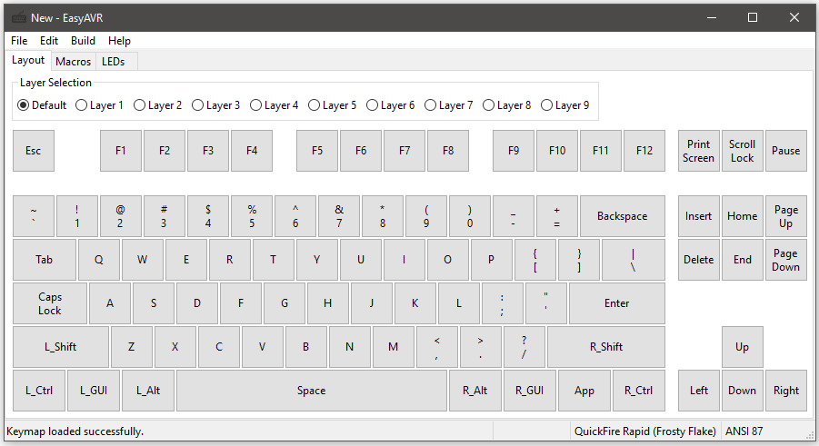
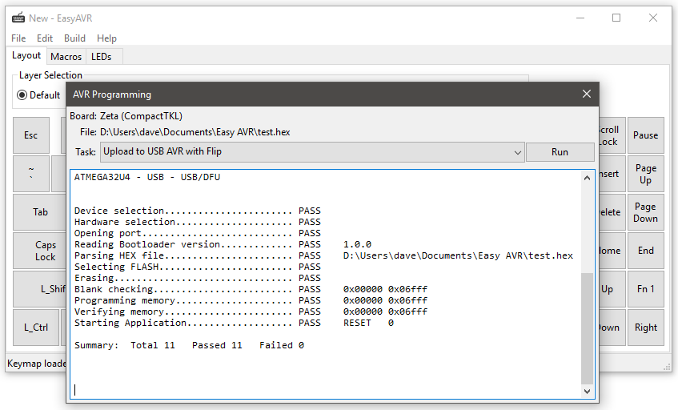

Getting Started¶
Creating a Custom Keymap¶

From the main window, select “File->New…”. In the “New Layout” dialog, select your keyboard type, then select your layout at the bottom. Not all keyboards have multiple layouts. The default is <All Keys>, which means every key the hardware supports is shown. Layout mods are discussed in Layout Mod Configs. Press OK to confirm your selection and create a new keymap.
You are presented with a view of the keyboard with a default map already assigned to the keys on the first layer (AKA the “default” layer). In addition to the “Layout” view, there are also tabs for “Macros”, “LEDs”, and “USB”. They are discussed in the Writing Macros, LED Functions, and USB Options chapters, respectively.
Your keymap can use up to 10 different layers. Layers are discussed in the Special Functions and Modes chapter. To open a layer for editing, select it using the radio buttons near the top. Most layers are initially empty. You can easily populate a layer by copy/pasting from a different layer using the “Edit” menu.

To customize your keymap, you need to assign scancodes to keys. Edit a key assignment by clicking it, which will bring up the editor box. This gives you some information about the key, and allows you to change the scancode assignment. To reassign the selected key to a normal scancode, you can simply press the desired key on your physical keyboard (except for arrow keys, space, and escape, which are used to navigate the editor box). To access the full range of available scancodes, you can select the “Scancode” parameter and click the “…” button, which will bring up the scancode picker tool.

The editor box also allows you to change the mode and automods of a key. These features, as well as all the special function scancodes, are discussed in the the Special Functions and Modes chapter.
You’re going to want to make sure you assign SCANCODE_BOOT somewhere on one of your layers. It makes reprogramming easier. I like to use Fn1+Esc.
When you’re done with your layout, save it with “File->Save As…”.
Programming a Build¶
From the main window, select “Build->Build and Reprogram…”. This will create a .hex file that can be loaded onto your custom keyboard and then execute a programming tool to perform the load. The “AVR Programming” dialog will open.
There are several programming tasks that may be selected. These support various AVR and OS combinations. The task you want is probably the one that has been auto-selected for you.
Put your keyboard into boot mode. Either press the key sequence that was previously programmed for boot, or use a hardware reset. Teensy controllers have a button. Most bpiphany controllers have a magnetic switch. KMAC uses the Caps Lock key while plugging it in. Other PCBs have a jumper. Know your hardware.
Press “Run”. The programming process should only take a few seconds. When it is done, the keyboard should automatically reconnect and start working.
Manually Programming¶
It is not necessary to use the built-in programming dialog if you don’t want to. You may build a .hex file and program yourself it using an external tool.
Teensy¶
Follow the instructions at the Teensy website
Flip¶
- Open the Atmel Flip app
- Click the microchip “Select a Target Device” icon and choose the AVR used by your board (usually ATmega32U4 or ATmega32U2)
- Put your keyboard into bootloader mode
- Click the USB “Select a Communications Medium” icon and choose “USB” from the menu
- Click the red “Load HEX File” icon and open the .hex file you created in the keymapper
- With the AVR now connected, click the “Run” button to reprogram with the new firmware
- With a successful completion, click the “Start Application” button
dfu-programmer¶
Put your keyboard into bootloader mode
Program your .hex file (replace device type as necessary):
sudo dfu-programmer atmega32u4 erase sleep 10 sudo dfu-programmer atmega32u4 flash /path/to/firmware.hex sudo dfu-programmer atmega32u4 launch